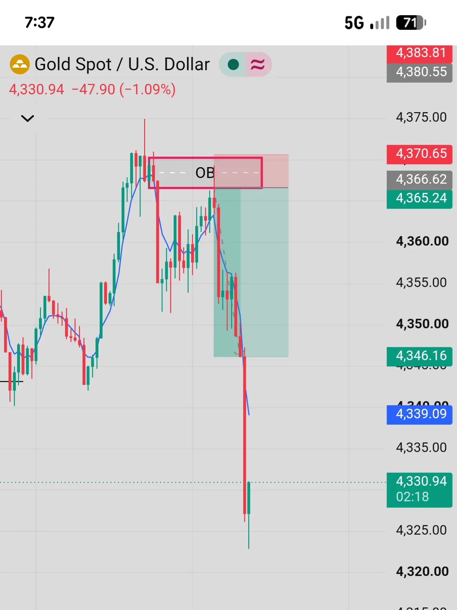
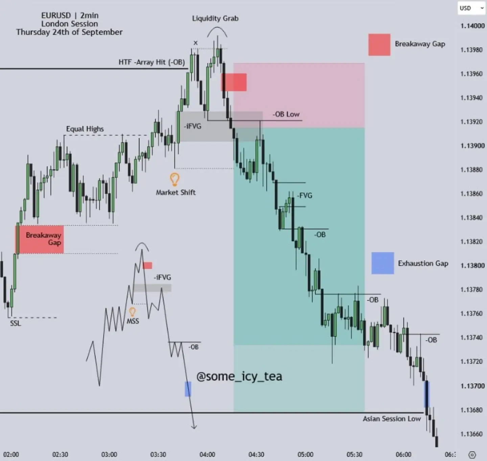
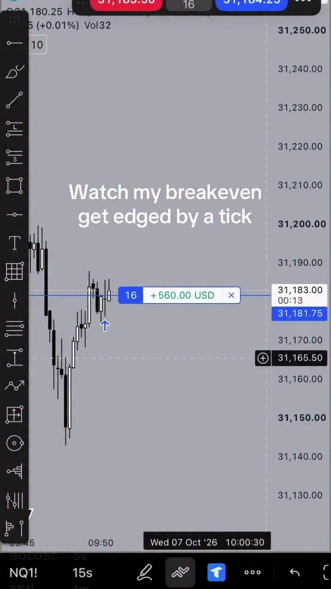
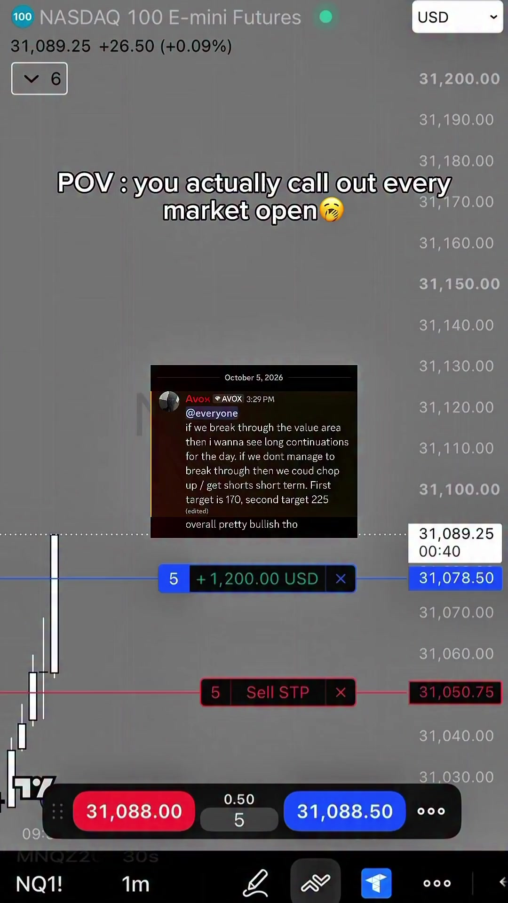
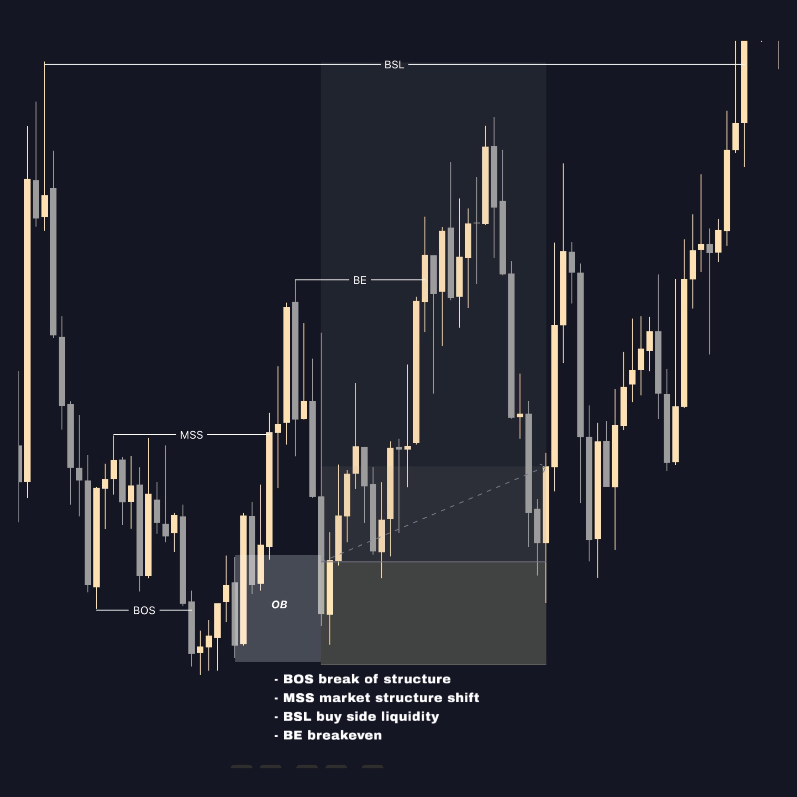

A forex trading strategy post showing an order-block chart setup.
Posted 2026-09-25
#forextrading#tradingstrategy
ดูแคปชันเต็ม
🫶❣️. #forextrading #tradingstrategy
120 posts. Video cards play the downloaded file. Swipe a card with dots to see every slide.

A forex trading strategy post showing an order-block chart setup.
🫶❣️. #forextrading #tradingstrategy
An educational forex post teaching the MSNR strategy with chart setups.
MSNR Trading, MSNR Strategy, Learn MSNR , Forex Trading Education, Forex Market Trading, Smart Money Concepts, Market Structure Shift, MSNR Pattern Trading, Price Action Trading, Supply and Demand Trading, Support and Resistance, Forex Analysis, Technical Analysis Forex, Forex Trading Course, Beginner Forex Trading, Advanced Forex Strategy, Risk Management Forex, Trading Psychology, Candlestick Analysis, Forex Mentor, Currency Trading, Intraday Trading, Swing Trading, Trading Setup, Forex Signals, Pipscalculator, MSNR Series, Smart Money Trading, Forex Learning, Profitable Trading Strategy, Forex Chart Analysis, Market Structure Trading, Trading Education, Forex Tips, Trading Masterclass, Online Forex Training, Retail Trader Education, Financial Markets, Trading Community, Forex Success #tranding #viralpost #msnr #tending #viralvideo

An EURUSD 2-minute London Killzone trade using ICT concepts after equal highs were raided and a HTF order block was touched.
Luxury. EURUSD 2min | @some_icy_tea Buyside (Equal Highs) raided, HTF -OB touched. Weakness shown afterwards with a clear setup. London Killzone Trade Entry using ICT Concepts ❄️

วิดีโอเก็บไว้ในเครื่อง รอย้ายที่เก็บ · ดูวิดีโอบน Instagram ↗NQ futures day-trading clip paired with a motivational caption about not letting failure define you.
never let failure define you #daytrading #nq #futures

วิดีโอเก็บไว้ในเครื่อง รอย้ายที่เก็บ · ดูวิดีโอบน Instagram ↗NQ futures day-trading clip highlighting the creator's trade callouts shared in their group that day.
Good callouts in the group today | #daytrading #motivation #nq #futures #futurestrading

Gold/forex educational graphic explaining market structure steps: BOS, MSS, order block, liquidity, execution.
Understanding market structure is the foundation of every high-probability setup. 📊 BOS → MSS → OB → Liquidity → Execution. Price doesn’t move randomly. Learn to read the structure, identify liquidity, and wait for confirmation before entering. Trade the structure. Not the emotion #XAUUSD #GoldTrading #ForexTrading #Trading
A carousel whose first slide shows a phone trading app with BTCUSD buy positions and buy-stop orders (balance 505.00, equity 526.00), with a caption claiming a $500 account was turned into $11K trading BTC and pointing to the bio link.
$500 → $11,000 🔥 Turned a $500 account into $11K trading BTC. 📈 One trade. One setup. One execution. 🔗 On bio
A hand gestures at a BTC/USDT order-flow screen with heatmap, CVD and absorption controls, while the caption explains how order flow, VWAP and liquidity walls are used to spot buyer aggression and absorption.
Why you should learn orderflow⚡️? We explain why order flow is essential for trading, showing live how VWAP, liquidity walls, resting limit orders, and market orders interact. We demonstrate how to spot buyer aggression, absorption, and delta shifts to make counter-trades with a 1:3 risk-reward ratio, targeting POC. #trading #orderflow #vwap #liquiditywall #absorption [ CVD,Tradingstrategy,Delta,footprints,volumeprofile,market orders,limit orders ]
A video of a man speaking above a hand-drawn chart marked BOS, with on-screen text 'Good vs Bad BOS' and 'Learn the language. Trade with confidence', and a caption pointing to the bio link.
Good vs Bad : BOS Edition - - Click the link in my bio to learn more.
A webcam video of a trader above a chart with Buy Stop and Buy Limit order tags and a -31.00 USD readout, captioned 'Holy Candle!'.
Holy Candle! #trading #forex #futures #ict #tradezella
A short video shows a forex trading app account screen (balance 302.14 and equity 392.14 in USD) with the caption 'NFP Plenger tapi win'.
NFP Plenger tapi win✌️ #xauusd #trader #goldenmoneyfx #forex #gold
A cartoon infographic titled 'Beginner Trader' compares an 'Emotional' monkey trader with a 'Patient' gorilla trader, each labeled 2000 apples.
Trading Psychology #trading #mindset #riskmanagement #investing
A verified trader shows completed gold scalp targets on a 1-minute chart, captioned 'GOLD TARGET DONE'.
GOLD TARGET DONE ✅ . . #viral #reels #trading
A Persian-language 5-minute lesson on lining up a fair value gap, double bottom and retested trendline in one zone as an entry area, with targets at the mid and main swing highs.
وقتی سه تأیید در یک ناحیه جمع میشوند، یک افویجی ساده میتواند به نقطهای کلیدی برای ورود تبدیل شود. 🎯 بازار در یک روند صعودی قرار دارد و پس از یک حرکت شارپ، وارد فاز اصلاح میشود. نکته مهم اینجاست که در ابتدای حرکت صعودی، یک افویجی باقی مانده که میتواند مقصد این اصلاح باشد. با شروع حرکت نزولی، خط روند اصلاح را رسم میکنیم. قیمت تا محدوده افویجی پایین میآید و پس از اولین واکنش، خط روند نزولی شکسته میشود؛ اما شکست خط روند بهتنهایی برای ورود کافی نیست. بهجای ورود عجولانه، منتظر بازگشت قیمت میمانیم. بازار دوباره به افویجی برمیگردد و در همان محدوده دابل باتم تشکیل میدهد. همزمان، خط روند شکستهشده نیز مجدداً آزمایش میشود. اینجا چند تأیید مهم کنار هم قرار گرفتهاند: واکنش به افویجی، تشکیل دابل باتم و آزمایش مجدد خط روند. با مشاهده واکنش صعودی، همین محدوده به ناحیه مناسب برای ورود خرید تبدیل میشود. برای مدیریت معامله نیز میتوان تارگت اول را روی سقف میانی و تارگت دوم را روی سقف اصلی ساختار در نظر گرفت. ⏱ تایمفریم تحلیل: 5 دقیقه 📌 این ستاپ را ذخیره کن؛ ترکیب چند تأیید در یک محدوده، بسیار مهمتر از ورود صرفاً با دیدن یک نشانه است. 📕 در کتاب تریدرز نوتز یاد میگیرید چگونه افویجی، ساختار قیمت و تأییدهای ورود را با یکدیگر ترکیب کنید و ستاپهای معاملاتی را مرحلهبهمرحله تحلیل کنید. 👇 برای دریافت کتاب تریدرز نوتز کافی است کلمه «کتاب» را در کامنت بنویسید. #شکاف_ارزش_منصفانه #دابل_باتم #fvg
A Thai-language carousel titled '8 habits of a 10/10 trader' contrasts a calm trader with an agitated one.
A post argues that SpaceX (SPCX) after its IPO slump mirrors NVIDIA's 2022 cycle, with a stated buy zone of $80-$100 and a $250+ target.
🚨 $SPCX IS ENTERING THE PHASE THAT CREATED NVIDIA MILLIONAIRES. SpaceX is down nearly 40% from its highs. Most people see a failed IPO. I see the exact same setup that created one of the biggest opportunities in NVIDIA history. Back in 2022: 📉 NVDA crashed more than 65%. 📉 The media declared the growth story dead. 📉 Retail dumped their bags while smart money quietly accumulated. Now look at SpaceX. We had the IPO euphoria, the violent selloff, and now fear is everywhere. 🎯 My buy zone: $80–$100 🚀 My target: $250+ By the time CNBC starts calling it the next big winner, the easy money will already be gone. I'll post my first $SPCX buy here the moment I take it. Hit FOLLOW and turn NOTIFICATIONS ON. #SpaceX #SPCX #Nvidia #StockMarketCrash #TradingStrategy #MarketCycles #SmartMoney
A verified futures trader shares a new six-figure NQ1! 5-minute trade, with a +121,500 USD position readout, captioned 'New 6 Figure Trade'.
New 6 Figure Trade 👀 #daytrading #trading
An alert that traders are waiting for the US CPI release on Oct 14, 2026 as a key inflation signal, listing forecasts against the previous figures.
🔥 CPI ALERT | INFLASI AS KEMBALI JADI SOROTAN Pasar akan menantikan rilis CPI AS pada 14 Oktober 2026 pukul 19.30 WIB, sebagai salah satu indikator utama untuk mengukur tekanan inflasi Amerika Serikat. 📌 Forecast vs Previous: • Core CPI m/m: — vs 0,3% • Core CPI y/y: — vs 2,4% • CPI m/m: — vs 0,4% • CPI y/y: — vs 3,4% Data CPI akan menjadi perhatian pasar karena dapat memengaruhi ekspektasi terhadap kebijakan suku bunga The Fed dan berpotensi memicu volatilitas pada USD, emas (XAU/USD), obligasi, serta indeks saham AS. ⚠️ Disclaimer: Konten ini hanya bersifat informasi dan edukasi, bukan ajakan membeli atau menjual aset (Not Financial Advice). #greatwallcommunity #tradegold #tradexauusd #xauusd
US tech stocks, gold and Bitcoin all sold off together as the 10-year bond yield rose above 5% and the dollar got stronger; about $230M in crypto long positions were wiped out within an hour.
ลงอะไรตั้ง3ตลาด ตัวเดียวก็ตุยแล้ว🔴🤣 . 🔴หุ้นสหรัฐฯ โดยเฉพาะ Tech โดนขาย หลัง Bond Yield 10 ปีเด้งกลับเหนือ 5% และ Dollar แข็ง ทำให้ตลาดกังวลว่าดอกเบี้ยอาจต้องอยู่สูงนานกว่าที่คิด . 🔴ทองก็เลยโดนกดตาม แม้ยังมีความเสี่ยงด้านภูมิรัฐศาสตร์อยู่ เพราะช่วงนี้แรงกดจาก ดอลลาร์แข็ง Yield สูง หนักกว่าแรงซื้อ Safe Haven . 🔴Bitcoin ก็เช่นกันร่วงหลุดระดับ 84,000 จากตอนเช้า 87,000 สถานะ Long ในตลาดคริปโตราว 230 ล้านดอลลาร์ จึงถูกล้างภายใน 1 ชั่วโมงที่ผ่านมา . แรงขายรอบนี้ส่วนหนึ่งเชื่อมโยงกับการร่วงแรงของ S&P 500 หลังมีรายงานเกี่ยวกับเงื่อนไขของอิหร่านสำหรับการเจรจากับสหรัฐฯ . เทรดเดอร์บางส่วนมองว่านี่เป็นเพียง การรีเซ็ตตลาดแบบปกติ ก่อนอาจกลับเข้าสู่ขาขึ้นอีกครั้ง ขณะที่อีกฝั่งมองว่าเป็น สัญญาณเตือนเรื่องความเสี่ยงจากการใช้ Leverage สูง ในตลาดคริปโตที่ยังผันผวนมากอยู่ อ้างอิง:Watcher.Guru,Reuters
For people who work hard and feel too tired to read, the post shows a way to take back time for reading books.
ทำงานหนัก เหนื่อย ไม่มีเวลาอ่านหนังสือ เอาเวลาคืนมา ด้วยวิธีนี้
A 1-hour GBPUSD breakdown: price sweeps the range high, reverses with a Turtle Soup and a Model-1 confirmation, then falls to the range low.
📍 Pair: GBPUSD | Timeframe: 1H 💡 Key Insights • Price swept the Range High and formed a Turtle Soup reversal setup. • Strong rejection from the liquidity area created the bearish displacement. • Model -1 confirmed the short-side market delivery after the retracement. • Price continued toward the Range Low, respecting the bearish structure. • Main lesson: Liquidity sweep + confirmation + disciplined execution can provide a clean directional setup. My free trading room link is in the bio. Follow @smart_moneygers for more trading insights, market breakdowns & educational content. 📈 ⚠️ Disclaimer: This content is for educational purposes only and does not constitute financial advice. Trading forex and other financial instruments involves substantial risk. Always conduct your own research and manage your risk responsibly. #gbpusd #forextrading #liquidity #priceaction #smartmoneyconcepts
A Thai beginner's guide to forex basics (pair, long/short, pip, lot, leverage) that stresses planning before every order.
คอมเมนต์ “คู่เงิน” ถ้าอยากเริ่มเทรดให้เป็นระบบ HOW TO เทรดคู่เงิน 101 📘 ถ้าอยากเริ่มเทรดคู่เงิน แต่ยังงงว่า Pair / Long / Short / Pip / Lot / Leverage คืออะไร โพสต์นี้รวมพื้นฐานที่ควรรู้ก่อนเริ่มไว้ให้แล้ว เป้าหมายไม่ใช่แค่ “กด Buy / Sell เป็น” แต่คือเข้าใจว่า กำลังทำอะไร และวางแผนก่อนเข้าออเดอร์ทุกครั้ง การเทรดควรเข้ากับชีวิต ไม่ใช่ให้ชีวิตวิ่งตามกราฟ
A 24-year-old full-time trader says success came from discipline, a system and risk management, not from winning every trade, and stresses lasting in the market long term.
การเป็นเทรดเดอร์เต็มตัวในวัย 24 สำหรับผมไม่ได้เกิดจากการ “เทรดแม่นทุกครั้ง” แต่มาจากการค่อยๆ เข้าใจว่า เมื่อไหร่ควรเทรด เมื่อไหร่ควรหยุด ควรเสี่ยงแค่ไหน และต้องรับมือกับวันที่ผิดทางยังไง จากคนที่เคยอยากเข้าให้ได้ทุกจังหวะ วันนี้ผมกลับให้ความสำคัญกับ **ระบบ วินัย และการบริหารความเสี่ยง** มากกว่าเดิม เพราะเป้าหมายของผมไม่ใช่การชนะตลาดทุกวัน แต่คือการทำให้ตัวเองสามารถอยู่กับการเทรดได้ในระยะยาว เส้นทางนี้ยังมีอะไรให้เรียนรู้อีกเยอะ และวัย 24 สำหรับผมก็เป็นเพียงจุดเริ่มต้นเท่านั้น **เซฟโพสต์นี้ไว้ ถ้าคุณกำลังพัฒนาการเทรดของตัวเอง 📌** การเทรดและการลงทุนมีความเสี่ยง ผลลัพธ์ของแต่ละบุคคลแตกต่างกัน
A GBP/USD breaker-block trade setup using ICT concepts.
Breaker More▶️ @Some_Cozy_Trades GBP/USD Tuesday September 5, 2026 @Some_Cozy_Trades ICT Concepts
A 2-minute EURUSD London-session trade using ICT concepts: price consolidates, gets pushed up into a higher-timeframe fair value gap, then drops, giving a Turtle Soup and fair value gap entry.
LTF Turtle Soup EURUSD 2min | @some_icy_tea Consolidation ahead of the Lunch Hour, followed by a brief manipulation up into HTF -FVG. Displacement down, TS & FVG entry. London Session Trade Entry using ICT Concepts ❄️
Forex SMC/ICT reel showing order blocks that only hit stop losses (stop-loss hunting).
ORDERBLOK ONLY HIT SL HUNTER OMG🥶 #msnr #smc #ict #trader #alchemist
Explains the two orderflow patterns traders need to know.
The two orderflow patterns that you need to know.
Reel showing a gold trade that hit its target.
GOLD TARGET DONE ✅ . . #viral #reels #trading
Thai reel on reaching your first 1 million baht through simple saving and investing.
1 ล้านบาทแรกด้วยวิธีแบบบ้านๆ #fyp #ลงทุน #เก็บเงิน
Trading chart reel (marked AI content) that asks viewers to comment "LIVE" to get the creator's YouTube link.
Comment "LIVE" to get my Youtube Follow @ahmedonchart for more!
A video comparing TPO (market profile) with Volume Profile as trading tools.
TPO vs Volume Profile
Says getting stopped out right after entering is usually impatience in waiting for valid market-structure confirmation, not bad analysis (Smart Money Concepts).
Kita semua pernah di posisi baru saja klik open posisi, tapi harga langsung balik arah dan kena stop loss. Masalah utamanya sering kali bukan salah analisis, tapi kurang sabar menunggu konfirmasi struktur pasar yang valid. Pelajari selengkapnya, Link ada di bio 🚀 . . . . . . . . #SmartMoneyConcepts #SMC #ForexIndonesia #TradingIndonesia #TrendForgeFX
A GBP/USD trade breakdown using ICT concepts.
Back for more More▶️ @Some_Cozy_Trades GBP/USD Tuesday September 1, 2026 @Some_Cozy_Trades ICT Concepts
The creator's analysis of gold (XAUUSD), with an educational-only disclaimer about trading risk.
My analysis on Gold xauusd Ma ⚠️ Disclaimer: This content is for educational and informational purposes only. It is not fina6ncial or investment advice. Trading involves high risk, and you may lose some or all of your invested capital. Past performance does not guarantee future results. Always do your own research and manage your risk before taking any trade. #goldtrade #smc #strategy #education #forex
An ICT-style XAUUSD trade showing a strong M5 market structure shift that moved well but didn't reach the take-profit.
Mss m5 strong but not hit tp🥶🗿#forex #alchemist #ict #trader #xauusd
Educational XAUUSD (gold) trade using a simple inducement (IDM) setup at the Asia-session high, explained with market structure, liquidity and order-block concepts.
XAUUSD Simple IDM Trade Asia High Swipe Trade ✅ - This Post Only Only For Education Not Any Financial Advice to Long Or Short - Follow Must @forex_ammol More Education #xauusd #trading #smartmoneyconcepts #priceactiontrading #marketstructure ( XAUUSD Analysis, Market Structure, Price Action , Liquidity Analysis, Smart Money Concept, Order Block , Inducement Setup )
A Smart Money Concept trading lesson.
Smart Money Concept Follow @mralbash_ #smartmoneyconcepts #tradingeducation #marketstructure #tradingreels #explorepage
Argues price action is the best tool and that the candlestick itself is the indicator.
SMC trading-strategy explainer covering market structure.
SMC Trading Strategy Follow @mralbash_ #smartmoneyconcepts #tradingeducation #marketstructure #strategy #explorepage
Claims a trader used Claude to build a Polymarket quant bot that made +$563,921 with a 50% win rate.
This trader used Claude to build a Quant Bot and made +$563,921 on Polymarket 86,044 predictions in 107 days with a 50% win rate How is this account bringing in about $5,270 per day? The logic is simple: 1. It runs through short crypto “Up / Down” markets at about 34 trades per hour 2. The strategy appears to build positions in stages rather than committing to both outcomes at the same moment 3. When probabilities shift, the model can add the other side at a different level, creating either a hedge or a more favorable combined position This trader’s Polymarket account: polymarket.com/@0xce25e214d5c… Most profitable trades: $4,793 → $12,273 (+$7,480 +156.1%) $10,059 → $16,683 (+$6,624 +65.9%) $2,071 → $8,679 (+$6,608 +319.1%) With a win rate sitting at exactly 50%, the performance appears to come from how the bot structures and adjusts each position#ai #polymarket #fyp #softwaredevelopment
Says internal lows are objectives to be neutralized and points viewers to a Telegram channel.
Consideramos bajos internos como objetivos a ser neutralizados Puedes unirte al Canal de Telegram usando el link del perfil #trading #trader #tradingforex #innercircletrader #ictconcepts
Shows a demo-trade clip with commentary about patience and not trading on emotion.
Educational chart post on profile shapes, telling traders to separate what is visible from what is inferred.
Profile Shapes. Use this chart as an educational example, not a live signal. Separate what is visible from what is inferred, and define the evidence that would change your interpretation. Save this for your next chart-review session. Illustrative educational graphic. Any prices, quantities, returns and statistics shown are synthetic examples, not verified market observations or performance results. #Nexural #TradingEducation #ChartStudy
Promotes an indicator claimed to win 80% of the time on XAU and BTC.
INDICATOR WINRATE 80% for XAU and BTC🚀 #tranding #xᴀᴜᴜsᴅ #btcusd
Short forex reel about the speed of momentum.
Speed of momentum #forexusa
Explains a distribution pattern as a sign of a potential trend reversal and how to spot bearish breakouts.
📉 Distribution Pattern – A Sign of Potential Trend Reversal! 🔥 Understand market structure, spot distribution, and identify potential bearish breakouts. 📊 📲 Join our WhatsApp Group – LINK IN BIO #trading #priceaction #technicalanalysis #tradefinx
Shows how to catch professional trader entries using volume trading and smart-money concepts.
How To Catch Entries like a Professional Trader #trader #volumetrading #smartmoney
Walks through a GBPUSD M30 setup with confirmations and points viewers to free and VIP groups for the full trade details.
GBPUSD M30 In This Post I Explained Gbpusd In Very Deep You Can See All I Showed All Confirmation And In Free Group I Explained Fully And In Vip Group I Posted Setup Of These Trades. #forex #ict #icttrading #forextrading #priceaction
Thai carousel where the author shares their experience of blowing up a portfolio, aimed at new investors (MT5 hashtags).
มาแชร์ประสบการณ์ พอตพังกัน.. #เธรด #mt5📊📈 #mt5 #นักลงทุน #นักลงทุนมือใหม่
NQ futures trader showing off a strong monthly PnL.
That monthly PnL looking mean 😤 That Flex Zone money baby 🫡 #NQ #THEFLEXZONE
Hindi-language video on why 90% of traders fall into liquidity traps, with a step-by-step Smart Money Concepts method for trading liquidity using daily candle highs and lows.
90% Traders Liquidity Trap me kyu faste hain? 📉 Liquidity identify karna aasan hai, lekin sahi tarike se trade na karne par losses ho sakte hain. Is video me dekhiye Smart Money Concepts (SMC) ka use karke liquidity ko properly kaise trade kiya jata hai! 🧠💡 Step-by-Step Strategy: 1. Daily Timeframe: Previous 1D candle ka High aur Low mark karein. 2. 15-Min Timeframe: Price ke kisi ek level ki liquidity sweep karne ka wait karein. 3. MSS (Market Structure Shift): Recent structure break hone par trend reversal ka confirmation lein. 4. FVG (Fair Value Gap): Price ke FVG par ane aur Engulfing Candle banane par entry plan karein. 5.Risk Management: Stop Loss FVG ke niche aur Target next liquidity level tak set karein. 📌 Save this video taki trading ke waqt strategy bhulein nahi! 💬 Aapko liquidity trading me sabse zyada mushkil kya lagti hai? Comments me batayein!
XAUUSD (gold) M30 chart breakdown of an ICT/price-action setup with its confirmations.
XAUUSD M30 In This Post I Explained Xauusd In Very Deep You Can See All I Showed All Confirmation And In Free Group I Explained Fully And In Vip Group I Posted Setup Of These Trades. #forex #ict #icttrading #forextrading #priceaction
Part 1 of 3 explaining how to use the 9 EMA + 21 EMA together to read trend direction and momentum before looking for an entry.
9 EMA + 21 EMA STRATEGY — PART 1/3 Want to understand the trend before looking for an entry? 👀 The 9 EMA + 21 EMA combination can help traders identify short-term momentum and the overall direction of the trend. 🔹 9 EMA → Faster & reacts quickly to price 🔹 21 EMA → Slower & helps identify the broader short-term trend 🔥 How to read the setup? ✅ Bullish • 9 EMA above 21 EMA • Both EMAs trending upward • Price holding above the EMAs 🔻 Bearish • 9 EMA below 21 EMA • Both EMAs trending downward • Price trading below the EMAs ⚠️ When both EMAs are flat and price keeps moving sideways, the setup becomes less clear. Trend first. Entry later. In Part 2, we’ll cover how to identify potential entries using the 9 EMA + 21 EMA setup. 🚀 💬 Do you currently use 9 EMA & 21 EMA? 📌 Save this post for later 📲 Follow Smart Money Breakouts for Part 2 Educational content only. Not SEBI registered. Not financial advice. #stockmarket #ema #chartanalysis #priceaction #breakouttrading
Daytrading motivation post about not giving up before you reach your goals (Nasdaq/futures hashtags).
Win or try again, You cannot give up before achieving your goals #nasdaq #daytrader #daytrading #futurestrading #stockmarket
EURUSD 1-hour trade breakdown: a buy-side liquidity sweep and Turtle Soup setup into a daily fair value gap, ending in a 5R short.
EURUSD (1H) 11 March 2026 Market Context 🔎 • Price delivered into Daily -FVG (premium zone) • Range High liquidity engineered • Clear buy-side liquidity sweep • Classic Turtle Soup above highs • Strong bearish displacement from HTF zone • Model-1 confirmation for precise entry • Expansion delivered into Range Low Trade Breakdown 📊 • Pair: EURUSD • Timeframe: 1H • HTF Confluence: Daily -FVG • Setup: Buy-side sweep → Turtle Soup → bearish continuation • Entry: Model-1 • Target: Range Low • Result: 5RR secured 💎 Liquidity taken above the highs. Rejection from premium HTF zone. Expansion into sell-side liquidity. HTF + liquidity = high probability. 🔗 FREE analysis daily Link in bio #eurusd #smartmoneyconcepts #forextrading #fyp #explore
NAS100 1-minute chart reel of a short trade making about +$3,070, with a caption inviting viewers to join a free trading group.
Join Serenity for free, on my page. #daytrading #nasdaq
Day-trading reel showing a +3R winning short trade, captioned 'Trader makes $47K in one trade', promoting live trade streams.
+3R HIT ✅ WATCH ME TRADE LIVE → 🔗 IN BIO Follow for Real Trading Education #daytrading #viral #reels
Educational carousel explaining why VWAP and the volume-profile POC can disagree, and what to match before comparing them.
VWAP and POC disagree. Neither is broken. POC VWAP POC identifies the highest-volume price row. Transaction-level VWAP averages prices using traded volume as weights. A small tail of trades can move the weighted mean while the busiest row stays in place. Match the inclusion window, underlying trades and units before comparing. Before comparing: same inclusion window; same underlying trade sample; same volume and price units. Save this chart check, or share it with someone studying the same question. Synthetic educational diagrams; schematic and not to scale. Not historical market data or a trading recommendation. #Nexural #OrderFlow #VolumeProfile #TradingEducation
Compares how a new trader and a pro trader read market structure, showing a downtrend turning into a bullish reversal.
The New Trader often focuses on a cluster of indicators (like the Moving Averages shown) to find signals. Their chart can be messy, leading to confusion and analysis paralysis. They are often "indicator-dependent." The Pro Trader looks beyond the indicators and focuses directly on price action itself. They understand market structure by identifying key highs and lows, potential reversals, and significant breaks in structure. They prioritize "understanding the market story" over just finding an entry signal. Key Takeaways from the "Pro Trader" view: Lower Highs & Lower Lows: This indicates a clear downtrend. Failed to Form a New Lower Low: This is a key signal that the downtrend is weakening. Broken Structure: When price pushes above a previous lower high, it's a massive clue that the trend has changed from bearish to potentially bullish. Bullish Correction & Entry: The entry is then based on a high-probability price action pattern (like a simple breakout and retest of that structure) after the structure break confirms the new trend. Ready to shift your focus to price action? Share your thoughts below! Hashtags: #TradingEducation #PriceActionTrading #MarketStructure #Downtrend #BullishReversal NewTraderTips ProTraderMindset ForexTrading StockMarket CryptoTrading TechnicalAnalysis FxKingSignal
Shows the IFVG model in both directions (liquidity sweep, FVG inversion, entry, targets) across the New York and London sessions.
Most traders miss the entry because they’re waiting for the move to look obvious. This video shows the IFVG model playing out both ways. First, New York pushed into the higher-timeframe FVG area, took liquidity, then closed back through the fair value gap to create the bearish IFVG entry. From there, price delivered cleanly into the 15M/1H FVG target zones. Then later, London swept the low, delivered into the 15M FVG, formed the bullish IFVG entry and pushed back towards the upside target areas. Same model. Different direction. Liquidity sweep → FVG inversion → IFVG entry → clear targets. SMC Sniper Pro maps the framework directly on TradingView so you can stop forcing trades and start waiting for the actual model. Available now through QuantFlow Labs. #IFVG #SMCTrading #LiquiditySweep #TradingViewIndicator #QuantFlowLabs
Viral clip of a live trading session around the NFP news release at a gathering in Bandung.
MELETUP NFP PASKAL BANDUNG🚀🔥
Shows a simple, clear forex trading strategy in action and argues trading doesn't have to be complicated.
Trading doesn’t have to be complicated when you have a clear strategy. 📉📈 Want to see full breakdowns, daily trade setups, and execution strategies step-by-step? 🔗 Join our Telegram community — link in bio! #tradingstrategy #forextrading #stockmarket #daytrading #technicalanalysis
A 4H setup walkthrough covering wick zones, liquidity sweeps, break of structure and FVG retest entries, with a focus on disciplined waiting.
Stop guessing entries. Follow a process. 📈 Most traders enter on emotions. Professional traders wait for confirmation. This simple 4H Setup helps you identify: ✅ 4H Wick Zone ✅ Liquidity Sweep ✅ Break of Structure (BOS) ✅ FVG Retest ✅ High-probability Entry Trading isn’t about taking more trades. It’s about waiting for the right one. 💾 Save this setup for your next trading session. 📤 Share it with a trader who needs more discipline. #smartmoneyconcepts #priceactiontrading #chartpatterns #intradaytrading #traders
Indian intraday trader shows his Day 18 trade log with an 11,030 INR profit.
Day (18) 11030 INR profit #trader #trading #StockMarket #indianmarket
Introduces Market Profile concepts including VWAP, POC, TPO, auction theory, order flow, volume, and price action.
📲 WhatsApp: 9166870399 #TycoonTradingSystem #tycoontraders_in #viswasyadav #marketprofile #vwap Market Profile • VWAP • POC • TPO • Auction Market Theory • Order Flow • Price Action • Volume • Trading Psychology • Trading Education • NIFTY • Futures • Options • Intraday Trading
Demonstrates an XAUUSD support-and-resistance strategy for gold and forex entries.
#xauusd SNR strategy📈 #trading #gold #usd #forex
Shows XAUUSD analysis across 1-hour, 15-minute, and 5-minute timeframes.
Xauusd timeframe 1h 15m 5m #trading #crypto #forextrader #stockmarket #gold
Shows an ES futures order-flow example framed around the “effort, no result” concept.
Effort. No result. 20.08 ES #es #esfutures #orderflow #futurestrading #trading
Explains using EMA and VWAP with RSI confirmation for an intraday trading approach.
Shows a full take-profit outcome and discussion around a 2:1 risk/reward setup.
Full tp 💰💸
Teaches a falling-wedge breakout setup, emphasizing confirmation, retests, and risk management.
Falling Wedge Breakout 📊 A falling wedge can signal a potential shift in market structure. Watch for a clean breakout + retest before looking for confirmation. Study the structure, wait for confirmation, and manage your risk. 🎯 Save this post for your trading study! #FallingWedge #ChartPatterns #TechnicalAnalysis #PriceAction #TradingEducation ForexTrading ForexEducation SmartMoneyConcepts SMCTrading ICTTrading TradingStrategy PriceActionTrading ForexTrader TradingSetup BreakoutTrading Retest CandlestickPatterns TradingTips LearnTrading ForexSetup TechnicalAnalysisTrading TradingCommunity DayTrading UAEForex DubaiForex ManishaFX
Uses XAU/USD lot sizes paired with different vehicles to illustrate position sizing.
อยู่ใจของคุณแล้วล่ะจะเทรดกี่ Lot 😂
Compares daily Monster purchases with investing the same amount, showing an estimated $2.74M portfolio from consistent investing.
I’ve left placeholders for your chart’s dates and figures. One person reached for a can of Monster every day. Another put the price of that can into Monster stock instead. The same daily habit—with a different kind of energy behind it. From 2002 to 2026: Monster drinker: 8,932 cans $20,517 spent Investor: The same amount invested day by day Estimated portfolio value: $2.74 million No huge deposit. No perfectly timed trade. Just a small amount invested consistently. One can doesn’t seem like much. But repeat that purchase for years, and the numbers start to tell a different story. The drink delivered a temporary boost. The investment bought a growing stake in the business behind it. This is a look back at one stock’s history—not a promise that the next investment will perform the same way. Simulation from April 2002–September 2026. Results depend on the can prices, stock prices, and purchase timing used in the simulation. Portfolio values are approximate. Historical results are not a forecast. Made with RaceCharts.io. Would you rather drink the energy—or own a piece of the company? #MonsterEnergy #MNST #Investing #StockMarket #Compounding #LongTermInvesting #PersonalFinance #MoneyHabits #WealthBuilding #DataVisualization #RaceCharts
A “POV: trading worked” reel portraying successful trading and funded-account progress.
#success #entrepreneur #explore
Encourages people not to compare their abilities or life path with others.
Explains screening growth stocks using gross-profit growth, net-income growth, and net-margin criteria.
อยากเจอหุ้น Growth ตัวต่อไปแบบ NVIDIA แต่ไม่อยากไล่เปิดงบทีละบริษัท? คลิปนี้แจกสูตรสแกนหุ้น Growth ผ่าน TradingView ใช้เวลาแค่ 1 นาที ด้วย 3 เงื่อนไขสำคัญ 📈 Gross Profit Growth 20% 💰 Net Income Growth 20% 🔥 Net Margin 20% ช่วยกรองหุ้นที่กำไรโตจริง มาร์จิ้นสูง และมีศักยภาพเติบโตแบบก้าวกระโดด เซฟคลิปไว้ แล้วเปิด TradingView ทำตามได้เลย! --- ❝ ปลดล็อกศักยภาพทางการเงินให้คุณ ❞ #Liberator แพลตฟอร์มการลงทุน ที่พร้อมสนับสนุนคนไทยให้มีอิสระทางการเงิน
📊 16 Chart Patterns Explained | MARKETPEDIA
📊 16 Chart Patterns Explained | MARKETPEDIA Want to recognise some of the most common bullish and bearish chart patterns? 📈📉 This MARKETPEDIA lesson breaks down 16 chart patterns, including: 🟢 Bullish Continuation Ascending Triangle Bullish Wedge Bullish Flag Bullish Symmetrical Triangle 🔴 Bearish Continuation Descending Triangle Bearish Wedge Bearish Flag Bearish Symmetrical Triangle 🟢 Bullish Reversal Double Bottom Triple Bottom Inverted Head & Shoulders Falling Wedge 🔴 Bearish Reversal Double Top Triple Top Head & Shoulders Rising Wedge Each setup highlights Entry, Stop Loss (SL), and Take Profit (TP) areas to help you understand how these patterns are commonly structured. 📚 Learn the pattern. 📊 Analyse the structure. 🎯 Wait for confirmation. 🛡️ Manage your risk. MARKETPEDIA — Learn. Analyse. Trade. Grow. ⚠️ Educational content only. Not financial advice. Trading involves significant risk. #Marketpedia #ChartPatterns #ForexEducation #ForexTrading #PriceAction #TechnicalAnalysis #TradingEducation #BullishPatterns #BearishPatterns #MarketStructure #RiskManagement #ForexForBeginners
How to trade asia session - ICT concepts 🔥
How to trade asia session - ICT concepts 🔥 #ict #trading #___ict_ #nasdaq #ifvg -asia session -ICT -SMC -FVG -IFVG -trading
Continuation Pattern: Price forms a flag/channel into the demand zone before expanding upward.
Continuation Pattern: Price forms a flag/channel into the demand zone before expanding upward. Consolidation: Range-bound price action absorbs orders inside the zone prior to the breakout. Liquidity Sweep: Price sweeps prior lows (PDL) to grab liquidity right inside the demand zone before reversing sharply. #forex #forextrading #forexsignals #forexmarket #forextrader
Comment “MODEL” and I’ll send you my entire model in a single PDF...
Comment “MODEL” and I’ll send you my entire model in a single PDF #daytrading #trading #futures #nq #PO3
Fibonachi
Fibonachi
มี 10 ล้าน 20 ล้านก็ยังเป็นลูกค้าไม่ได้... โลกนี้มีธุรกิจกลุ่มหนึ่งที่คนทั่วไปอย่างเราแทบไม่มีโอกาสได้ใช้บริการ นั่นคือ Private Equity ยักษ์ใหญ่ที่ทำหน้าที่บริหารเงินให้กับคนหรือองค์กรระดับหลายพันล้านดอลลาร์ และหนึ่งในเบอร์ใหญ่สุดของโลกก็คือ KKR
AI กินไฟไม่พอ... AI กินน้ำด้วย! 🚰🤖 Xylem (XYL) หุ้นระบบจัดการน้ำรายได้เท่าไหร่ไม่รู้ แต่รู้ว่า Margin โตไวกว่ายอดขาย (รายได้ +5.5% vs Operating Income +21%) ข้อดี มี Installed Base ผูกขาดลูกค้ายาวๆ แต่ FCF แอบย่อ -3% แบบนี้เรียกว่าสัญญาณเตือนหรือจังหวะเก็บ? เพื่อนๆคิดยังไงกับหุ้นตัวนี้บ้าง ย้ำรอบที่ล้าน เราแค่ชอบหาหุ้น ชอบอยากรู้ว่าเค้าหาเงินกันยังไง แต่ไม่ได้แปลว่าทุกคนที่ทำคลิปมันจะขึ้นเพราะถ้าเรารู้เรารวยไปนานแล้ว และเราจะไม่บอกใครหรอก 😂 #อย่าเป็นคนเก่งที่รวยไม่เป็น #หุ้นต่างประเทศ #หุ้นอเมริกา
DAILY PLAN – XAUUSD (H1) | 29/09/2026...
DAILY PLAN – XAUUSD (H1) | 29/09/2026 ⠀ Gold faced aggressive selling pressure from OB + RESISTANCE, leaving a GAP and breaking structure through BOS down into the STRONG SUPPORT base near the 0 fib level[cite: 14]. Price is currently consolidating at the lows, setting up expectations for a corrective relief bounce through the SMALL OB toward the major FIBO ZONE + FVG supply[cite: 14]. ⠀ 🎯 Key Levels 🔹 OB + RESISTANCE: ~4,290–4,320, primary overhead supply zone that initiated the sharp sell-off[cite: 14] 🔹 GAP: ~4,270–4,285, unfilled price gap created during the impulse drop[cite: 14] 🔹 FIBO ZONE + FVG: ~4,200–4,240, confluence of Fib 0.5–0.618 and fair value gap, main upside target for the pullback[cite: 14] 🔹 SMALL OB: ~4,145–4,155, intermediate resistance hurdle to clear for extended upside[cite: 14] 🔹 STRONG SUPPORT: ~4,100–4,115, major structural floor currently holding the base[cite: 14] ⠀ ⚠️ Invalidation A clean H1 close below STRONG SUPPORT (~4,100) cancels the corrective bounce plan and triggers downside trend continuation[cite: 14]. ⠀ 💡 Bias: Bullish corrective bounce while STRONG SUPPORT holds (~4,100–4,115), targeting a break above SMALL OB toward FIBO ZONE + FVG (~4,200–4,240), where price should be watched for bearish rejection signals[cite: 14]. ⠀ LEVIATHAN For educational purposes only. Not financial advice. ⠀ #NotFinancialAdvice #EducationalPurposeOnly #trading #xauusd #gold #forex
Comment “GEX” to get it FREE
Comment “GEX” to get it FREE
peak #daytrading
peak #daytrading
EURUSD (30/9/26). Most traders close because they're scared of giving back profit. But the market doesn't care about your P&L. Your exit should come from price action not emotion.
EURUSD BB 15M time frame (30/9/26) Most traders close because they're scared of giving back profit. But the market doesn't care about your P&L. Your exit should come from price action not emotion. Let the chart tell you when it's time to leave. Follow for more. #EURUSD #Forex #ForexTrading #PriceAction #ICT SMC DayTrader TradingView Pips MarketReapers
Your Bitcoin sitting idle? Try BTC Yield. Subscribe with BTC and receive BTCY — access competitive APY via a Binance-managed covered call strategy, without actively trading options.
حتى الجولة ما تمنعك من نظرة سريعة 👀
Vol drops from 18% to 8%....
Vol drops from 18% to 8%. The gamma bell goes tall and narrow at the strike. All the convexity stacks up at the money, so a small move swings your delta hard. Vol comes back and the bell flattens. Same option, sensitivity spread thin across strikes. Zomma measures that reshaping. dGamma over dVol. Near the money it runs negative, so a vol spike drains gamma from exactly where you are sitting. The stock never has to move. And look at the price. It grinds up while vol bleeds, then rolls over when vol wakes up. Leverage effect. Your gamma and your direction get hit together. Scripts and yt video explaining in my bio #options #volatility #gamma #zomma #greeks #optionstrading #impliedvolatility #derivatives
Absorption is not control....
Absorption is not control. Delta is not control. Volume is not control. The real question is simple: Did price actually respond? Read the complete auction — Market Profile → Context → Orderflow → Absorption → Price Response → Execution. That’s the difference between seeing data and understanding the market. Want to learn Market Profile & the Tycoon Trading System professionally and in a structured way? 🌐 Tycoontraders.in 📲 Download the application — link in bio 💬 DM / WhatsApp: 9166870399 Join the Trading Room or connect for learning. Save this post. Read it again before your next trade. #MarketProfile #Orderflow #Absorption #Delta #FootprintChart AuctionMarketTheory PriceAction TradingPsychology TradingEducation FuturesTrading IntradayTrading TradingSystem ProfessionalTrading TycoonTradingSystem ViswasYadav TycoonTraders
Topstep BANS me for making way to much money (100k/m)...
Topstep BANS me for making way to much money (100k/m) Comment “10AM” for the exact guide is use on a day to day basis
📚 UPCOMING LEARNING BATCH
📚 UPCOMING LEARNING BATCH Want to learn the stock market with practical strategies and proper risk management? • Buy Before Breakout ⭐ • Risk–Reward Ratio ⭐ • Swing Trading Stock Selection • Volume & Breakout Analysis • Support & Resistance • Entry, Stop Loss & Target • Practical Trade Execution • Risk Management 📩 To know more about our upcoming learning batch session, inquire with us. 📞 Contact: 7038909149 Learn • Practice • Trade with Discipline. [Stock,Swing trading,Learn,Indicators,RSI,Relative strength]
The triple top, Would you buy or sell?
The triple top, Would you buy or sell? An uptrend carries price up here, the first top rolls over, the second stalls at exactly the same price. Then a third one starts forming and pokes out above the other two, so it looks like the level is finally breaking. The close says otherwise. Want to learn how to read setups like this yourself? Check out the link in our bio for our ebooks and our 100% free community. #pattern #strategy #tradingtips #trading #tradingstrategy #tradingeducation #tradingpsychology
ทำไมคนที่ทำสมาธิสม่ำเสมอ ตัดสินใจเรื่องสำคัญได้ดีกว่า
ทำไมคนที่ทำสมาธิสม่ำเสมอ ตัดสินใจเรื่องสำคัญได้ดีกว่า . . คนที่ตัดสินใจได้เฉียบคม ไม่ได้ฉลาดกว่าคุณ แต่พวกเขามีนิสัยเล็กๆ อย่างหนึ่งที่ต่างออกไป #Camp9 #ทำสมาธิ #mindfulness #กฎแรงดึงดูด #จักรวาล
My September trade recap ...
My September trade recap #daytrader #trading
God is great #nq #motivation #daytrader #futures
God is great #nq #motivation #daytrader #futures
Pure Smart Money Concepts Strategy in XAUUSD 📈🔥#Trading #ForexTrading #SMC
How to utilize confluence in order flow! #orderflow #trading #daytrading
How to utilize confluence in order flow! #orderflow #trading #daytrading
Follow and comment settings to know complete settings....
Follow and comment settings to know complete settings. 📚 UPCOMING LEARNING BATCH Want to learn the stock market with practical strategies and proper risk management? • Buy Before Breakout ⭐ • Risk–Reward Ratio ⭐ • Swing Trading Stock Selection • Volume & Breakout Analysis • Support & Resistance • Entry, Stop Loss & Target • Practical Trade Execution • Risk Management 📩 To know more about our upcoming learning batch session, inquire with us. 📞 Contact: 7038909149 Learn • Practice • Trade with Discipline. . #learn #stockmarket #education #stockmarketindia #stocktrading
Initial Balance is not a breakout signal. It’s a reference point that helps you read the developing auction and day structure. Learn Market Profile & the complete Tycoon Trading System in a structured way from a professional trader.
Initial Balance is not a breakout signal. It’s a reference point that helps you read the developing auction and day structure. Learn Market Profile & the complete Tycoon Trading System in a structured way from a professional trader. Visit Tycoontraders.in or download the application — link in bio. #Trading #marketprofile #tycoontraders_in #viswasyadav #orderflow
Ich LIEBE dieses Business-Modell, aber irgendwo muss hier doch der Haken sein......
Ich LIEBE dieses Business-Modell, aber irgendwo muss hier doch der Haken sein... 👉 Was übersehe ich? Ist das die Jahrhundert-Chance oder droht hier ein valider Grund für die Schwäche (z. B. Konsumflaute, Margendruck oder verändertes Essverhalten)? Haut eure ehrlichen Gedanken und Argumente in die Kommentare! 👇
XAUUSD x Me | 👁️🗨️
XAUUSD x Me | 👁️🗨️ Key words:- Quasimodo (QM) + Liquidity Sweep + Order Block reaction + Classic V and Classic A with logics and anaylsis. ICT concepts with Fibonacci OTE and key level confirmation mainly SBR/RBS structure gave clean entry everytime. SMC | ICT | Price Action | Liquidity | Order Block | Fair Value Gap | FVG | Fibonacci | OTE | Smart Money | QML | Quasimodo | SnR | Support Resistance | Supply Demand | Nifty Trading | Forex Trading | BTC | IFVG | Scalping | Intraday Trading | Market Structure| xauusd | bitcoin | crypto | coins forex | forextrading || Btc Trading | #smc #trading #xauusd #msnr #post
#femaletrader #tradinglife #trading ...
#femaletrader #tradinglife #trading #womeninbusiness #stockmarket
My OTE Strategy Keeps Printing #trading #nasdaq #dekodatrades
My OTE Strategy Keeps Printing #trading #nasdaq #dekodatrades
Vip trade setup 🎯🎯 follow for more information telegram channel link in bio ✔️ ....
Vip trade setup 🎯🎯 follow for more information telegram channel link in bio ✔️ . . . . . . .#forexsignals #stokmarket #cryptotrading #forexlifestyle #forexmindset forex forexmarket forextrading cryptotrading forexprofit forexmindeset trading traderlife swingtrader daytrader trading
Code "OSMAN" 55% OFF #trading #daytrader #trader #daytrading #livetrading
Code "OSMAN" 55% OFF #trading #daytrader #trader #daytrading #livetrading
Fibonacci 🔥🧿 ....
Fibonacci 🔥🧿 . . . . . #trading #xauusd #fibonaccistrategy #tradingstrategy #goldstrategy
Sunday H1 candlestick buy-or-sell quiz.
Sunday quizz comment your score 😶

Fantasy versus the boring routine of a profitable trader.
A day in the life of a profitable trader ☕ Not the version Instagram sold you. The actual boring one that makes money. The profitable version is so boring nobody would ever post it. That's exactly why it works. ⏰ THE ACTUAL HOUR-BY-HOUR 1. BEFORE THE SESSION — 15 min Check the calendar for news. Mark the daily bias. Note key levels and liquidity. Glance at DXY. Write the ONE thing you're watching today. Done. 2. WAITING FOR THE KILL ZONE — often an hour+ Nothing to do yet. Price isn't in the window. The professional does something else and comes back. This block feels like wasted time and is actually the discipline that protects the account. 3. THE SESSION — 30-60 min Watch the kill zone. Most days the setup doesn't come cleanly. On the days it does, take ONE trade. Set stop and target. That's the entire active part of the day. 4. IN THE TRADE — doing nothing The hardest block. The trade is on, the plan is set, the correct action is to not touch it. A price alert and a closed platform. 5. AFTER — 10 min Journal the trade or the no-trade. Screenshot. One line on how it felt. The trading day is over before lunch. 6. THE REST OF THE DAY — not trading Gym. Work. Family. The profitable trader is NOT at the screen all day. Being away from the chart is part of the edge. Add up the active trading time. Maybe one hour. The other 23 are prep, waiting, journaling, and deliberately staying away. Most losing traders invert this. They trade for eight hours and prepare for none. 🚫 WHAT THE FANTASY GETS WRONG ❌ "More screen time = more money" → More screen time = more trades = more mistakes. Profit comes from the trades you DIDN'T take. ❌ "Trading all day shows dedication" → It shows you have no criteria. Sitting on your hands is the advanced skill. Clicking constantly is the beginner one. ❌ "Excitement means it's going well" → If your trading is exciting, you're probably gambling. A good day is quiet, almost dull. ❌ "The lifestyle is the goal" → The car was rented for the video. The beach guy is losing money with a nice view. The entire fantasy exists to sell you something — a course, a signal group, a dream. Boring doesn't sell. follow @niccofx #displine🔥
Phone screen with several XAUUSD positions open.
#viral #trading #viralreels #foryou

The small-account trap: why a $100 account feels impossible.
The small account trap — why $100 feels impossible 💸 It's not that a small account can't grow. It's that being small makes you do the exact things that keep it small. The small account didn't fail you. What being small made you DO failed you. 🔁 THE DOOM LOOP: Small account → "too slow at 1%" → overleverage → one bad trade → deposit again → repeat 🔴 WHY A SMALL ACCOUNT SABOTAGES YOU 1. The numbers feel pointless 1% of $100 is $1. Winning makes you $3. Your brain says this is a waste of time and pushes you to size up. The truth: you're not trading to make $3. You're trading to prove you can follow a process. The small amount IS the point. 2. You treat it as disposable "It's only $100." So you gamble with it in ways you never would with real money. The truth: how you treat $100 is exactly how you'll treat $10,000 later. You're practising a relationship with risk. Disposable now = reckless later. 3. You want it to change your life Secretly you're hoping $100 becomes $10,000 fast. That hope forces huge risk — because small risk can't produce that dream in any reasonable time. The dream is what kills the account. 4. Every loss feels like proof you can't do it A few losses wipe a big percentage fast. That feels like failure, so you quit or revenge trade. The truth: small accounts have brutal percentage swings on normal streaks. It's math on a small number, not evidence you're bad. None of these are about the $100. They're about what it makes you FEEL and then DO. 🧮 THE MATH NOBODY WANTS TO HEAR PATIENT ($100, risk 1% = $1/trade): → A 5-loss streak costs ~$5. Account still $95. Survives easily. → After a year: still here, habits proven, ready to size up safely. THE TRAP ($100, risk 20% = $20/trade): → A 5-loss streak nearly wipes it. One bad week ends it. → After a year: deposited 6 times, same $100, nothing learned. 💡 THE REAL PURPOSE: A small account is not an income tool. It's a TRAINING tool. Its job isn't to make you money. It's to let you make every beginner mistake at a price you can afford, while you build the habits that matter. You're paying a tiny tuition to learn. Trying to earn a salary from it skips the entire lesson follow @niccofx
Viral trading meme with a FundedNext discount code. Promo, not a lesson.
Code OSMAN for 55% OFF #trading #daytrader #trader #daytrading #livetrading
The Point of Control is where the market did the most business, not automatic support.
The Point of Control is not support. It is not resistance. It is not a buy button. It is the price where the market did the most business. That matters because the auction spent time agreeing there. When price comes back, the question is simple: does the market accept that price again, or reject it and move away fast? The POC gives you location. The reaction gives you the decision. Save this before you blindly bounce the next POC. Send it to someone learning to read the auction instead of collecting indicators. Education only. Not financial advice. #nexural #pointofcontrol #volumeprofile #orderflow #marketstructure #tradingeducation #priceaction #retailtrading
Chart patterns in one graphic. Older than the others.
Best trading setups explain in this photo. XM broker partner code :- KTJF2 #tradingpost #tradingsetup #tradingstrategy #explorepage
BTCUSD 5-minute chart from early September.
Follow @kitakafx for more ! September 2nd BTCUSD Chart 1 timeframe: 5min Join my FREE training happening now - link on bio @kitakafx #forex #trading #tradingstrategy #tradingtips Disclaimer: Not financial advice, for educational purposes only
The journey of a trader is not a straight line up.
The journey of a trader isn’t straight up. Most traders start with confidence after a few wins… then reality hits. Losses. Fear. Self doubt. Mental breakdowns. Wanting to quit. But this is the stage where most traders are built. The traders who become successful aren’t the ones who never struggled… They’re the ones who kept showing up when nothing was working. Every loss teaches you. Every mistake sharpens you. Every setback builds discipline. Eventually the charts start making sense. Your emotions calm down. Your strategy gets better. Your patience improves. Then one day… What once felt impossible starts working. Trading rewards the people who stay consistent long enough to mature. Keep going. Your breakthrough could be closer than you think. 📈 #tradingmotivation #trader #trading #stockmarket #tradingpsychology
Separate prop and personal strategies, backtest, manage risk, stay consistent.
With my 6 years of experience allowing me to generate over $28,000 in April 2026 and $18k in May 2026 alone, these are some of the most important lessons I've learned as a trader. 1. Your prop firm strategy and your personal trading strategy should not be identical. The objectives and constraints are completely different. 2. Be careful with scaling into positions. If you don't have a clearly defined framework for adding size, it becomes extremely difficult to measure whether it's helping or hurting your long-term performance. 3. Backtesting is one of the most underutilised tools available to traders. Before risking real capital, you should have evidence that your strategy has an edge. 4. Accountability accelerates growth. Every mistake contains a lesson, but only if you're willing to take ownership of it and make adjustments. 5. Consistency comes from execution. The more objective your process is, the less likely you are to make emotional decisions that damage performance. 6. Above all else, your strategy matters. Risk management and psychology are important, but without a genuine edge in the market, there is nothing to manage. After years of refining my approach, I decided to put everything into one place. Inside the Obsidian Trading Discord community, members get access to my proprietary trading indicator completely free. Alongside this, I’ve created an overview course that breaks down how I use the indicator in real market conditions and how I approach execution. My goal is simple: shorten the learning curve and help traders avoid the mistakes that took me years to figure out. Link in bio if you'd like to learn more. #daytrading #trading
IFVG trade setup to save.
IFVG setup Save this trade setup so you don’t forget✅ Copy my exact trades📲 Link in bio. #trading #futures #futurestrading #signals #tradingstrategy
Smart money waits for the retest instead of chasing price.
Bullish Retest Entry 📈 Smart money doesn’t chase price — it waits for the retest. Clean demand zones + structure confirmation = high-probability entries. Trade with patience, not emotions. Let the market come to you. #forex #xauusd #ict #smc #trading.
Five strategies: trend, breakout, pullback, mean reversion, momentum, plus risk and discipline.
Top 5 Trading Strategies Every Trader Should Know Trading is not about winning every trade — it’s about having a clear strategy, managing risk, and staying disciplined. In this guide, we cover 5 popular trading approaches: 📈 1. Trend Following — Trade with the direction of the market. 🚀 2. Breakout Trading — Look for price to break key support or resistance levels. 🔄 3. Pullback Trading — Enter after a temporary move against the main trend. ⚖️ 4. Mean Reversion — Look for price to return toward its average after an extreme move. 🔥 5. Momentum Trading — Focus on strong price movement and momentum. 💡 Remember: No strategy guarantees profits. Successful trading requires testing, risk management, patience, and consistency. Save this post for later and follow Pro Trading Market for more trading education.#Trading #TradingStrategy #ForexTrading #StockTrading #DayTrading #TechnicalAnalysis #PriceAction #TradingEducation #RiskManagement #ProTradingMarket
Trading in Traffic is peak.
Trading in Traffic is peak #avaltrades #daytrading #daytrader #futurestrading #trading
Nothing saved in this category yet.